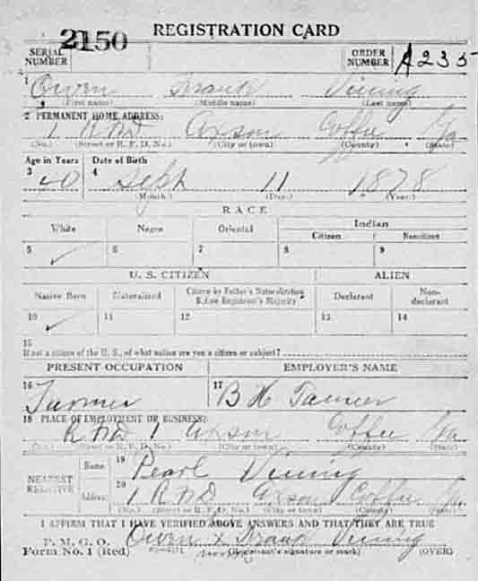
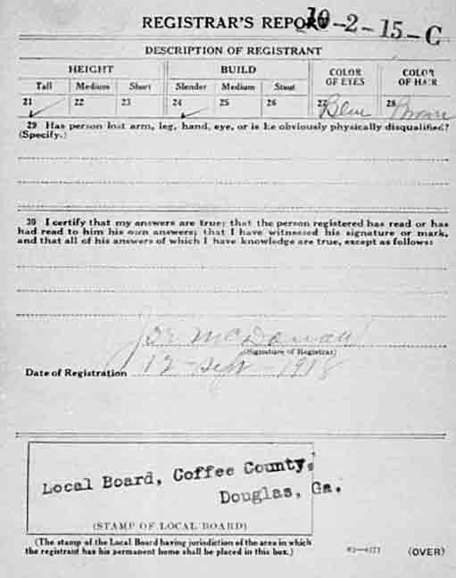
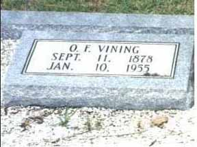
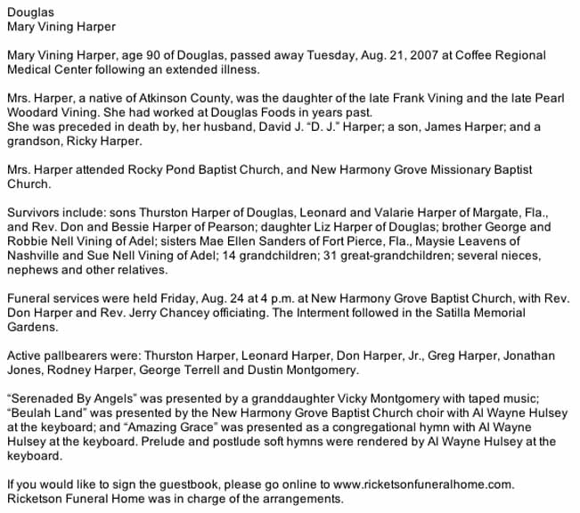
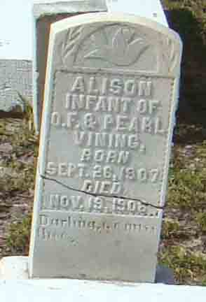
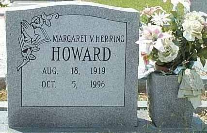

Nilitary Data
World War I registration card for Owen Franklin Vining:

Census Data
| 1910 | 1920 | 1930 | 1940 | |
| Owen Franklin Vining | ? | 41 | 51 | 62 |
| Pearl (Woodard) Vining | ? | 26 | 41 | 50 |
| Frank Allison Vining | dead | |||
| Walter Laffette Vining | ? | 10 | 20 | married and living in separate household |
| Earl Vining | 9 | 18 | 31 | |
| Leon Vining | 7 | 17 | living in separate household | |
| Woodard Vining | 5 | 15 | married and living in separate household | |
| Mary Kizzie Vining | 3 y., 2 m. | 13 | married and living in separate household | |
| Margaret Pearl Vining | 11 | married and living in separate household | ||
| Mae Ellen Vining | 9 | married and living in separate household | ||
| Maysie Vining | 8 | 17 | ||
| Sue Nell Vining | 1 y., 6 m. | 12 | ||
| George Washington Vining | 9 |


Death Data
Gravestones for Owen Franklin Vining and Pearl (Woodard) Vining, in Franklin Baptist Church Cemetery, Douglas, Georgia:


